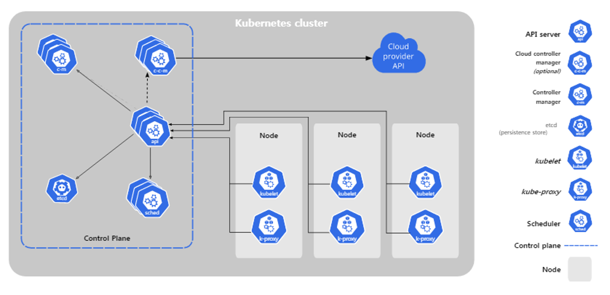
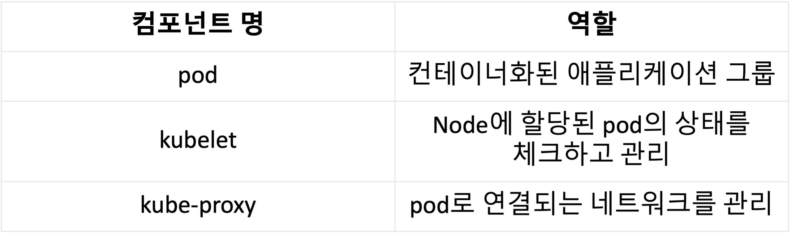
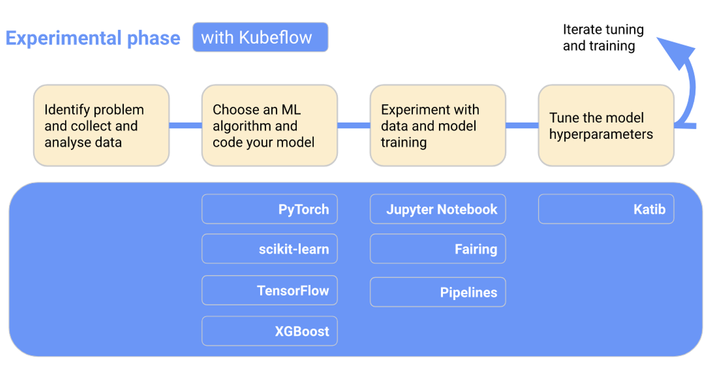

Chapter 1. Motivation for MLOps
ML 생애주기
우리가 Machine learning(ML)을 이용한 솔루션을 생각할 때 흔히 하는 착각이 있다. 그건 바로 무조건적으로 좋은 모델을 만들어서 사용하면 되는것 아닌가? 하는 생각이다.
하지만 실제 ML에는 모델을 만드는 일이 전부가 아니라 문제에 필요한 데이터를 정의, 수집, 준비(가공)하는 과정이 필요하다.
즉 하나의 ML 서비스가 만들어지기 위해서는 모델을 어떻게 만들 것인가? -> 모델을 어떻게 평가할 것인가? → ML 모델을 서비스로 만들 것인가? 와 같은 노력의 과정이 필요하다. 게다가 위 과정을 거쳐서 모델이 만들어져서 서비스로 올라간다고 끝나는게 아니다. ML의 생애 주기는 배포된 서비스를 지속적으로 모니터링하고, 위 과정을 다시 돌아서 모델을 재학습, 재배포하는 과정까지 모두 포함한다.

DevOps vs MLOps
소프트웨어 기반 서비스가 발전하며 서버는 지속성은 주요한 요소가 되었다. 업데이트가 되더라도 유저 입장에서는 지속적으로 서비스가 사용이 가능해야 한다.
이것을 CI/CD 라고 부른다. CI/CD는 지속적 통합(Continuous Integration), 지속적 배포(Continuous Deployment)이며 개발자(Developer)뿐만 아니라 운영자(Operator), QA(Quality Assuarance)와도 관련이 있다. 개발자는 코드 관련된 수정을 할 것이고, 운영자는 최신의 모델로 업데이트 해야하며, QA는 그것에 대해서 평가를 해야한다.
이러한 과정을 묶어 DevOps라고 하며 ML 서비스의 발전에 따라 ML 기반 서비스에서도 CI/CD의 적용은 필수적이며 CI/CD 뿐만 아니라 지속적 학습(CT), 분류 레이블 증가, 학습 시나리오 추가 등 기존 DevOps에서 제공되는 기능의 추가적인 기능이 포함된 MLOps의 개념이 생겼다.
차이점 1. 모델을 만들고 배포하는 과정 추가
차이점 2. 코드 뿐만 아니라 모델을 만들기 위한 데이터 공급이 필요 (실제 프로덕션에서 발생하는 데이터)
공통점 : 입력값이 주어졌을 때, 프로세스를 처리, 처리 과정에서 단위 테스트, 통합 테스트 포함, 배포 후 모니터링
MLOps의 이점
현업 관점
변화에 대한 관리가 가능 (툴 제공 + 일하는 방식)
IT/개발 부서
품질 관리를 ML 분야에서도 확장
ML 프로세스의 수준 향상 (소스코드, 통합 테스트, 컴파일 / 배포, 모니터링)
데이터 전문가
파이프라인 자동화
지속적인 모니터링
재학습/재배포 자동화
Chapter 2. MLOps Lifecycle 1 : 데이터 준비
문제 정의
풀어야 하는 문제 정의를 먼저 해야 함
문제를 해결하기 위해 데이터를 준비하고 이러한 작업들이 실제로 비즈니스 가치를 창출할 수 있어야 함
데이터 확보
문제 해결을 위한 데이터 확보 프로세스
1. 데이터 확보
2. 데이터 수집
3. 데이터 연계 과정
고정되어있지 않고 변화하는 데이터셋의 경우 버전 관리 및 공유가 필수적임
데이터셋 탐색 및 가공
데이터가 어떻게 분포해있는지 확인하는 단계
데이터셋 요약 및 시각화를 이용한 탐색이 필요함 (분포 확인, 이상치 및 결측치 확인, 시각화)
이미지 분류와 같이 데이터에 대한 레이블이 필요할 경우 태그하는 과정이 필요
모델 학습, 통계 분석을 통해 피처 중 중요한 것과 아닌 것을 파악
데이터의 패턴과 분포를 통해 피처 간 연관성 확인
데이터 검증
데이터 품질관리 기반인 검증 단계
1. 테이블 별 건수 검증
2. 코드 검증
3. 무결성 검증
검증 요건에 따라 설계 후 검증 쿼리 개발, 검증 결과 모니터링 후 피드백하는 프로세스
Chapter 3. MLOps Lifecycle 2 : 실험 학습
실험, 모델 학습/최적화/비교평가
ML Lifecycle에서
실험/학습파트데이터 가공 및 검증 파트가 데이터 준비 파트와 겹침
데이터 가공 결과에 따라 모델이 변경되기도 함
모델 성능에 데이터가 직접적인 영향을 미침
-> 대규모 데이터를 대용량 클러스터에서 처리하는 것도 이 과정에 포함
모델은 아래 입력 조건에 따라 결정됨
- 데이터
- 학습 알고리즘
- 하이퍼파라미터
입력 조건들을 바꿔가며 최적의 모델을 찾아가는 과정을 실험이라 부름
이러한 반복적인 과정을 보다 쉽게 관리하고자 함
실험 추적관리
실험 실행: 위 3가지 입력(데이터, 학습 알고리즘, 하이퍼 파라미터)으로 하나의 실험을 수행위 실험과정에서 다양한 산출물들(입력 조건, 모델, 실험이력 등)이 발생하는데, 이를 체계적으로 관리하는 것이 중요함
각 실험에 대해 입력값을 관리 + 산출된 모델의 메타 정보 관리
애저에서는 실험별로 사용된 데이터 & 모델의 버전 관리 & 성능 확인 & 서비스로 배포된 모델 추적 등의 기능을 제공함
자동화된 ML
위 과정을 자동화하기 위한 도구(애저의 기능 이름인 듯, 일반적으로 Hyperparameter Optimization)
높은 성능의 모델을 효율적으로 찾으려면?
입력 조건에 따른 성능을 예측하고, 성능이 좋을 것으로 예상되는 입력 조건으로 다음 실험을 진행 & 이 과정을 반복 수행
애저에서는 이 작업을 수행할 때 다수의 모델이 실행되고 앙상블도 실행됨. 기본적인 성능 지표, 모델을 만들기위한 과정도 로그로 저장됨. 스냅샷 기능은 당시 실행한 py 파일 저장해둠.
모델의 검증
예측 성능
모델의 예측값이 실제값에 얼마나 가까운지
얼마나 잘 일반화(Generalized)되는지
DS가 관심을 두는 부분
처리 성능
모델이 예측값을 계산해내는데 소요되는 시간, 사용하는 컴퓨팅 자원
안정적으로 얻을 수 있는 추론 성능
SWE가 관심을 두는 부분
서비스가 얼마나 안정적으로 되고 있는지 파악할 수 있는 요소(처리 시간, 처리량, 실패 유형 등)
애저에서는 어플리케이션 인사이트 기능을 이용함. 코드에서 발생하는 모든 로그 정보가 한 곳에서 통합 관리됨
Chapter 4. MLOps Lifecycle 3 : 모델 해석
모델 해석의 필요성
대부분은 Black Box Model이다.
정확도 만으로 모델의 성능을 평가할 수 없다.
모델이 예측을 잘하는지 객관적 평가, 성능지표가 필요하다
모델 해석 분류 기준
Intrinsic vs Post-hoc: 모델 자체로 해석 여부 가능한지, 아니라면 해석을 위한 새로운 모델링Model-specific vs Model-agnostic: 특정 모델에만 적용되는지Global vs Local: 데이터에 따른 모델의 범위
모델 해석 방법

Chapter 4. MLOps Lifecycle 4 : 모델 배포 및 서빙
Model Serving이란 다른 애플리케이션에서 ML 모델을 사용할 수 있도록 모델을 배포하거나, 모델 API를 제공하는 것을 의미

모델 모니터링
서빙 단계에서는 모니터링의 기능을 제공하여 모델에 대한 성능을 주기적으로 확인해야 함
모델 성능 하락 원인
Data Drift: 데이터의 통계적 변형
Schema Drift: 데이터 스키마 변형
Data Skew: 데이터의 불균형
Concept Drift: 비즈니스 목적의 변형
k8s, kubeflow 기본
k8s
서비스 디스커버리와 로드 밸런싱 : DNS 이름을 사용하거나 자체 IP 주소를 사용하여 컨테이너를 노출
스토리지 오케스트레이션 : 로컬 저장소, 공용 클라우드 공급자 등과 같이 원하는 저장소 시스템을 자동으로 탑재
자동화된 롤아웃과 롤백 : 원하는 상태를 서술하고 현재 상태를 원하는 상태로 설정한 속도에 따라 변경 가능
자동화된 빈 패킹 : 각 컨테이너가 필요로 하는 CPU와 메모리(RAM)를 제공
자동화된 복구(self-healing) : 실패한 컨테이너를 다시 시작하고, 컨테이너를 교체
시크릿과 구성 관리 : 암호, OAuth 토큰 및 SSH 키와 같은 중요한 정보를 저장하고 관리
k8s 클러스터 구조

쿠버네티스 아키텍처에서 클러스터(Cluster)란 컨테이너 형태의 애플리케이션을 호스팅하는 물리/가상 환경의 노드들로 이루어진 집합
Node는 하나의 가상머신을 의미합니다. 쿠버네티스는 컨테이너화 된 애플리케이션을 실행하는 Worker Node와 그러한 Worker Node를 관리하는 Master Node로 구성됩니다.
Master / Worker Node

Master Node

Worker Node

Kubeflow


Kubeflow workflow


Appendix
MLFlow 예제
MLOps Level
MLOps 레벨과 특징
Level 0
데이터 분석, 준비, 학습, 검증 모두 수동
학습 편향 발생 가능성 증가
CI/CD 없음 (간헐적인 출시일 경우)
ML 시스템 배포가 아닌 예측 서비스
성능 모니터링 부족
Level 1
ML 파이프라인을 자동화하여 모델을 지속적으로 학습
학습 자동화 및 파이프라인 구축
데이터 및 모델 유효성 검사
특성 저장소
메타데이터 관리
Level 2
Level 1에서 CI/CD면에서 집중적으로 강화된 시스템을 MLOps Level 2로 구분
소스 제어
서비스 테스트 및 빌드
배포 서비스
모델 레지스트리
특성 저장소, ML 메타데이터 저장소
ML 파이프라인 조정자
Reference
Chapter |
URL |
|---|---|
1 |
|
2 |
|
Appendix : MLOps Level |
|
3 |
|
3 |
|
4 |
|
4 |
|
4 |
|
4 |
|
4 |
|
4 |
|
4 |
|
4 |
|
4 |
|
4 |